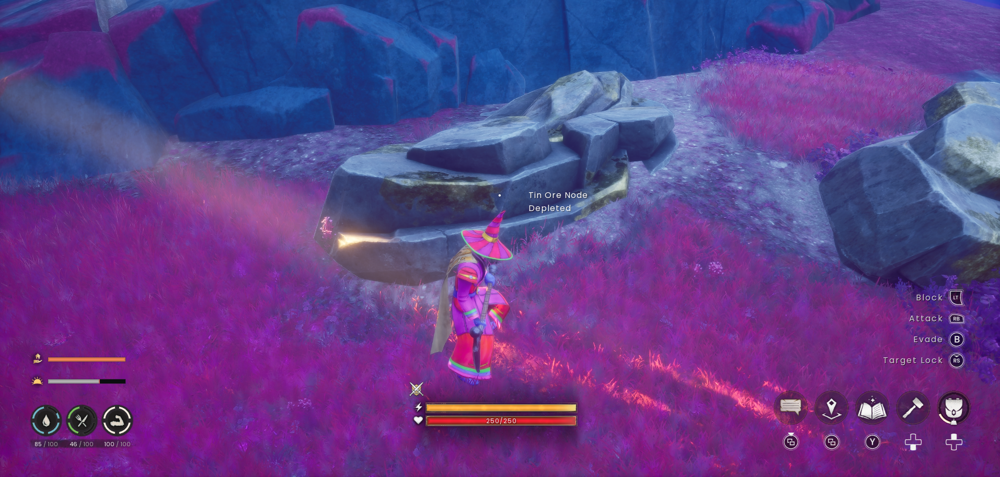

Tools & gathering tiers
Match your tool to the material before making a long expedition.
Mining: which pickaxe?
| Pickaxe | New materials at this tier |
|---|---|
| Stone | Stone, Rune Essence, Clay |
| Bone | Copper, Tin, Sandstone |
| Bronze | Iron, Silver, Granite |
| Iron | Gold, Coal, Dragon Tooth; use Iron for Blurite (source tables disagree) |
| Steel | Mithril |
| Mithril | Adamantite, Limestone, Gypsum |
| Adamant | Runite |
| Rune | Highest-tier mining; check the current node prompt. |
Higher tiers retain access to earlier materials. If a node refuses your tool, read its requirement instead of repeatedly swinging. The table follows the supplied Mining snapshot; newly added resources may have separate requirements.


Woodcutting: which axe?
| Logging axe | Additional trees at this tier |
|---|---|
| Stone | Ash |
| Bronze | Oak |
| Iron | Willow, Blightwood, Bloodwood |
| Steel | Dead trees, Thorny Irit |
| Mithril | Maple |
| Adamant | Yew |
| Rune | Magic |
Use normal swings on a standing tree and overhead chops on fallen timber. Position so falling trees and enemies do not trap you. Preserve stumps if you want trees to regrow; the saved pages disagree on exact real-world respawn timing, so this guide does not promise a timer.
Skill spells that change gathering
| Unlock | Practical use |
|---|---|
| Mining 11 · Rocksplosion | Break nearby rock within the spell’s area. Useful for clustered deposits. |
| Mining 24 · Stone Spirits | Help locate a nearby clay or ore deposit; a direction hint still needs a safe route. |
| Mining 80 · Divine Rock | Uses five ore to transform a node. Read the current spell costs before casting. |
| Woodcutting 11 · Axtral Projection | A magical aid for cutting trees. Bring the required runes. |
| Woodcutting 27 · Splinter | Helps process fallen logs. |
| Woodcutting 50 / 52 · Trunk Totem* | A later gathering aid; consult the current spell description. |
Further reading
For exact requirements, detailed walkthroughs and more depth, visit the topic pages below.
Wiki adaptations and data: RuneScape: Dragonwilds Wiki contributors, CC BY-NC-SA 3.0. See credits for source dates.